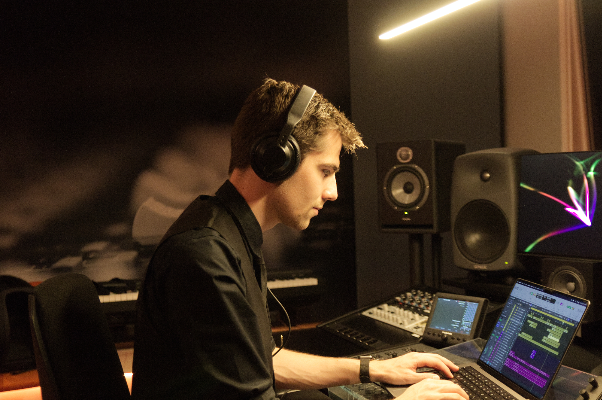

Bram Meester (b. 1998) is a Dutch music producer. With his background in Electronic Dance Music, he has made songs for different artists and media productions.
His notable work comes from a partnership with
BMG Production Music.
Through this collaboration, his music can be heard on TV and streaming services all over the world.
Bram Meester (b. 1998) is a Dutch music producer. With his background in Electronic Dance Music, he has made songs for different artists and media productions.
His notable work comes from a partnership with
BMG Production Music.
Through this collaboration, his music can be heard on TV and streaming services all over the world.
He is also working together with different artists across Europe. On writing camps he gets the chance to combine his experience with others to create something completely unique.
Bram is always looking for a way to improve and learn from other people and medium. That's way he also loves to experiment with creating music for games or record and edit samplepacks.
TLDR: Bram loves to create electronic music for all kinds of purposes.

His history in music starts around the age of 10, where he attended drum classes for 4 years.
Drums where fun, but he quickly realised that his love for EDM was bigger then his love for drums.
That's why he picked up FL Studio 11 and made his first productions inspired by the sounds of Avicii, Hardwell, Armin van buuren, Deadmau5 and the likes.
Not long after he made a handfull of proudctions, he got accapted for a 3-year Music Production study at the
ROC of Amsterdam.
Here he learnd a lot about the basics and had the time to develop his workflow and style.
With these skills, he now wanted the focus more on the technical part of sound in general and music theory.
That's why a bachelor in MediaMusic at
ArtEZ
Enschede was where his next 4 years unfolted.
After these 2 studies, Bram is exploring different opporunities and is trying to exand his network.
Whather if it's an album for a band or music for a video game, he loves to implement his style in all sorts of projects.